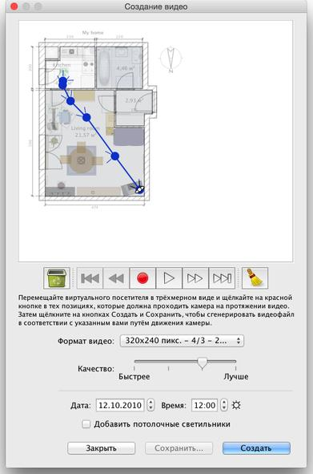

| Создание видеороликов | |||
Для создание видеоролика трёхмерного обзора вашего дома, выберите пункт меню Вид 3D > Создать видео... или выберите инструмент Создать видео из трёхмерного вида.
Это вызовет диалоговое окно, похожее на окно, вызываемое при создании фотографий  В верхней части этой панели появится план вашего дома, на котором будет указан виртуальный путь видеокамеры.
Ниже расположены кнопки записи, воспроизведения, удаления, помогут создать нужный путь движения видеокамеры. Для создания фото, выберите начальное положение видеокамеры в основном окне трёхмерного просмотра 3D Sweet Home и
нажмите красную кнопку на панели создания видео. Затем переместитесь в трёхмерном просмотре на следующую позицию
и снова нажмите красную кнопку. Повторяйте эти действия для каждой новой позиции видеокамеры.
|
|